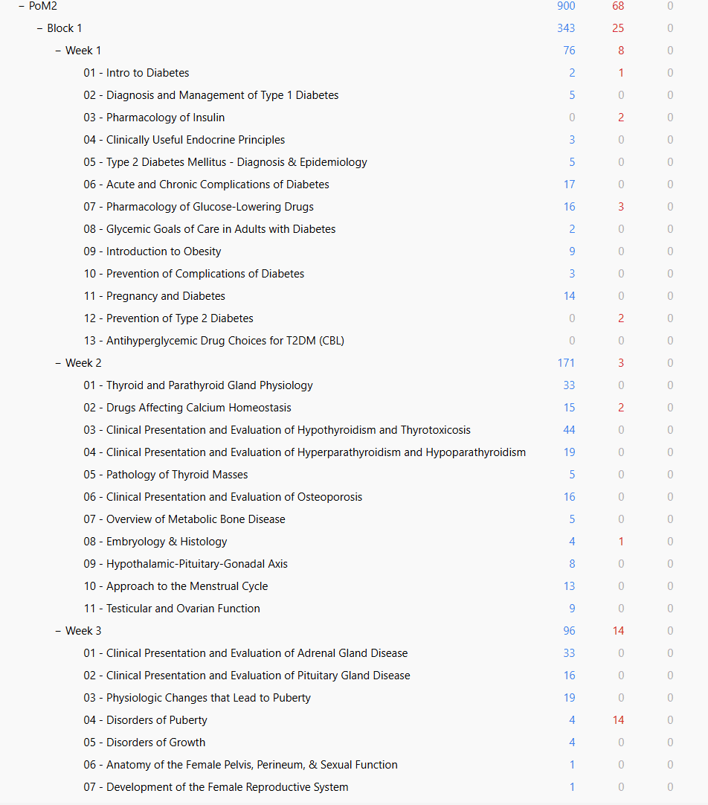

Loading notes…
Diabetes and endocrine pharmacology, thyroid, parathyroid and bone, adrenal, pituitary, puberty and growth.
1683 cards from 1194 notes, across 34 lectures. 305 are marked high-yield.
Christina’s deck, brought up to date. It is the deck the classes pass down, re-exported against this year’s lecture slides — lectures that changed are updated and new ones are added, so what you download matches the course as it is being taught now.
To import it: open Anki on a computer, then File → Import and pick the file. It arrives as PoM2::Block 1 with the week and lecture subdecks intact, so it sits beside whatever you already have rather than merging into it.

Week 1 516
Week 2 572
Week 3 595